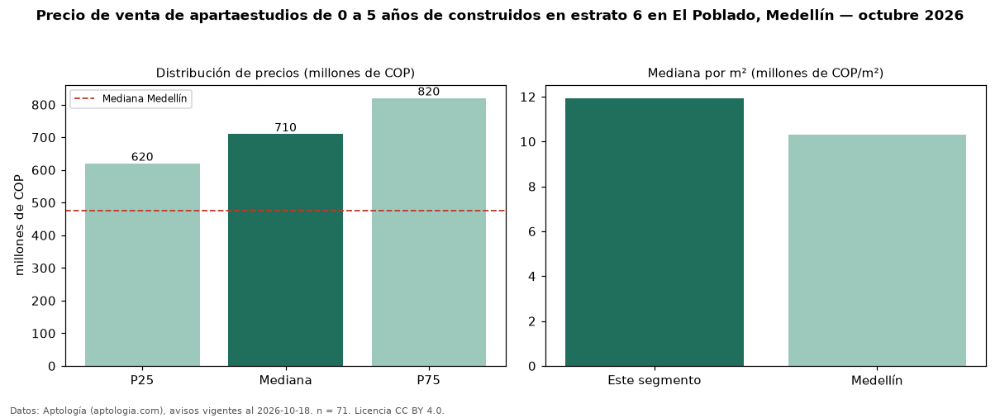

Precio de venta de apartaestudios de 0 a 5 años de construidos en estrato 6 en El Poblado, Medellín — octubre 2026
COP 710 millones es el precio mediano de apartaestudios de 0 a 5 años de construidos en estrato 6 en venta en El Poblado, Medellín (n = 71 avisos). Frente a la mediana de los apartaestudios en estrato 6 en venta de El Poblado (COP 680 millones, n = 87), queda 4 % por encima; este segmento reúne el 82 % de esos avisos. Por metro cuadrado, la mediana es COP 11,93 millones/m² (n = 68), 0 % por encima de los apartaestudios en estrato 6 en venta de El Poblado (COP 11,93 millones/m²). El área mediana anunciada es 62 m². La administración mediana declarada es COP 480.000 al mes (n = 37). La mediana de todos los apartaestudios en venta de Medellín es COP 475 millones (+49 % de diferencia). La mitad central de los avisos va de COP 620 millones a COP 820 millones (razón 1,3), una dispersión baja. Datos: Aptología (aptologia.com), CC BY 4.0 — https://www.aptologia.com/apartaestudios-en-venta/medellin/el-poblado. Archivos: PDF, CSV con las cifras y gráfica PNG.

| Avisos únicos | 71 |
|---|---|
| Percentil 25 | COP 620.000.000 |
| Mediana | COP 710.000.000 |
| Percentil 75 | COP 820.000.000 |
| Mediana por m² | COP 11.934.989 |
Fuente: avisos vigentes de portales inmobiliarios recopilados por Aptología, deduplicados (mínimo 30 avisos únicos por celda). Precios pedidos, no cerrados. Fecha: 2026-10-18.